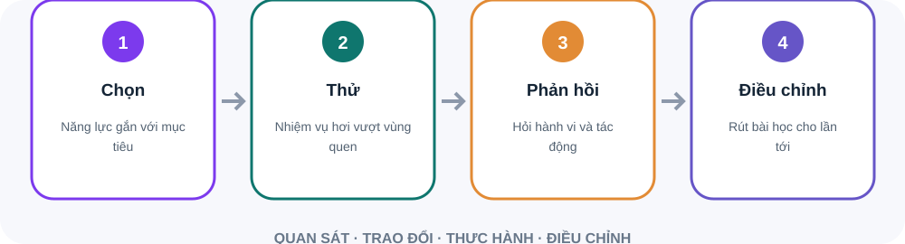

Năng lực có thể phát triển qua nhiều kiểu vai trò.
Xem công việc nào tạo động lực và đóng góp.
Bạn cần chủ động nêu mục tiêu và đề nghị cơ hội.
Mô tả hành vi hoặc năng lực cần thay đổi.
Nêu cách nhận biết tiến bộ.
“Trong cuộc họp vừa rồi, điều gì tôi làm giúp hoặc cản trở trao đổi?”
Tình huống cụ thể giúp tránh nhận xét chung chung.
Tóm lại điều nghe được, rồi hỏi mình hiểu đúng chưa.
Có thể giúp nối mục tiêu cá nhân với nhu cầu nhóm.
Chia sẻ góc nhìn và cách tiếp cận.
Mục tiêu còn phù hợp với công việc và ưu tiên không?
Có thể phát triển qua dự án ngang, chuyên môn sâu hoặc vai trò mới.
Chia sẻ mong muốn nghề nghiệp trước kỳ đánh giá chính thức.
Chọn kỹ năng cần luyện và cách quan sát tiến bộ.
Đề nghị phụ trách một phần dự án liên nhóm.
Sau mỗi mốc, hỏi người tham gia điều gì nên cải thiện.
Phát triển không chỉ là tham gia khóa học. Gắn năng lực với trải nghiệm thực tế, phản hồi và lần thử tiếp theo.

Mô tả hành vi quan sát thay vì “lãnh đạo tốt hơn”.
Việc hoàn toàn mới có thể cần mục tiêu học trước.
Nguồn: Locke & Latham · Goal-Setting Theory
Sơ đồ tóm tắt bốn bước. Phát triển không chỉ là tham gia khóa học. Gắn năng lực với trải nghiệm thực tế, phản hồi và lần thử tiếp theo. Mục tiêu cụ thể: Mô tả hành vi quan sát thay vì “lãnh đạo tốt hơn”. Độ khó phù hợp: Việc hoàn toàn mới có thể cần mục tiêu học trước.
Bạn muốn thể hiện điều gì cụ thể?
Cuộc họp nào có thể thử?
Bạn sẽ hỏi ai điều gì sau đó?
Nêu kết luận trước, một rủi ro và lựa chọn đề xuất. Sau đó hỏi người tin cậy phần nào giúp ra quyết định, điều gì còn khó hiểu. Ghi một điều sẽ điều chỉnh.
Phòng thực hành: kế hoạch phát triển trong 2 tuần. Tình huống: Bạn muốn cải thiện cách cập nhật với lãnh đạo. Tuần này có một buổi báo cáo dự án và một cuộc họp rà soát.. Hãy tự nêu dữ kiện, rủi ro và hành động đầu tiên trước khi mở gợi ý xử lý.
Nêu điều bạn muốn học và vì sao.
Tìm dự án hoặc nhiệm vụ mới để luyện.
Nhận phản hồi, thử thay đổi và xem lại kết quả.